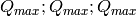
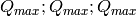

ConvertToMDMinMaxGlobal dialog.
Table of Contents
| Name | Direction | Type | Default | Description |
|---|---|---|---|---|
| InputWorkspace | Input | MatrixWorkspace | Mandatory | An input Matrix Workspace (Workspace2D or Event workspace) |
| QDimensions | InOut | string | CopyToMD | String, describing MD-analysis modes, this algorithm can process. There are 3 modes currently available and described in details on*MD Transformation factory* page. The modes names are CopyToMD, |Q| and Q3D. Allowed values: [‘CopyToMD’, ‘Q3D’, ‘|Q|‘] |
| dEAnalysisMode | InOut | string | Direct | You can analyze neutron energy transfer in Direct, Indirect or Elastic mode. The analysis mode has to correspond to experimental set up. Selecting inelastic mode increases the number of the target workspace dimensions by one. See MD Transformation factory for further details. Allowed values: [‘Elastic’, ‘Direct’, ‘Indirect’] |
| Q3DFrames | Input | string | AutoSelect | What will be the Q-dimensions of the output workspace in Q3D case? AutoSelect: Q by default, HKL if sample has a UB matrix. Q - momentum in inverse angstroms. Can be used for both laboratory or sample frame. HKL - reciprocal lattice units. Allowed values: [‘AutoSelect’, ‘Q’, ‘HKL’] |
| OtherDimensions | Input | str list | List(comma separated) of additional to Q and DeltaE variables which form additional (orthogonal) to Q dimensions in the target workspace (e.g. Temperature or Magnetic field). These variables had to be logged during experiment and the names of these variables have to coincide with the log names for the records of these variables in the source workspace. | |
| MinValues | Output | dbl list | ||
| MaxValues | Output | dbl list |
The algorithm calculates the MinValues and MaxValues limits produced by the ConvertToMD v1 algorithm for three MD transformation possibilities namely CopyToMD, |Q| and Q3D [1]. To estimate these limits the algorithm uses the following procedure:
 . If dEAnalysisMode is Elastic, we convert to
Momentum units, find the maximum value, and multiply by 2, since the
maximum momentum transfer occurs when the incident beam and the
scattered beam are anti-parallel.
. If dEAnalysisMode is Elastic, we convert to
Momentum units, find the maximum value, and multiply by 2, since the
maximum momentum transfer occurs when the incident beam and the
scattered beam are anti-parallel. ), calculate to
), calculate to  and
and  .
The maximum momentum transfer is
.
The maximum momentum transfer is  .
. , and the first three values of
MaxValues are 
, and the first three values of
MaxValues are  and the first three values of MaxValues are
and the first three values of MaxValues are
 [2]
[2]Notes
| [1] | The algorithm does not use MD Transformation factory so can be used as independent verification of MD Transformation factory work on a spherical instrument. |
| [2] | for HKL mode one needs to have an OrientedLattice attached to the sample. |
Example - Find min-max values for |Q| transformation :
# Simulates Load of a workspace with all necessary parameters #################
detWS = CreateSimulationWorkspace(Instrument='MAR',BinParams=[-50,2,50],UnitX='DeltaE')
AddSampleLog(detWS,LogName='Ei',LogText='52.',LogType='Number');
# evaluate |Q| transformation limits
minn,maxx = ConvertToMDMinMaxGlobal(InputWorkspace=detWS,QDimensions='|Q|',dEAnalysisMode='Direct')
# Look at sample results:
print 'MD workspace limits:'
print '|Q|_min: {0:10f}, dE_min: {1:10f}'.format(minn[0],minn[1])
print '|Q|_max: {0:10f}, dE_max: {1:10f}'.format(maxx[0],maxx[1])
Output:
MD workspace limits:
|Q|_min: 0.000000, dE_min: -50.000000
|Q|_max: 12.025534, dE_max: 50.000000
Example – Find min-max values for Q3D transformation, while converting TOF to energy transfer :
# Simulates Load of a workspace with all necessary parameters #################
detWS = CreateSimulationWorkspace(Instrument='MAR',BinParams=[20000,20,400000],UnitX='TOF')
AddSampleLog(detWS,LogName='Ei',LogText='52.',LogType='Number');
# evaluate Q3D transformation limits, which includes converting units
minn,maxx = ConvertToMDMinMaxGlobal(InputWorkspace=detWS,QDimensions='Q3D',dEAnalysisMode='Direct')
print 'Min values:: Qx: {0:10f}, Qy: {1:10f}, Qz: {2:10f}, dE:{3:10f}'.format(minn[0],minn[1],minn[2],minn[3]);
print 'Max values:: Qx: {0:10f}, Qy: {1:10f}, Qz: {2:10f}, dE:{3:10f}'.format(maxx[0],maxx[1],maxx[2],maxx[3]);
Output:
Min values:: Qx: -5.401917, Qy: -5.401917, Qz: -5.401917, dE: 51.680898
Max values:: Qx: 5.401917, Qy: 5.401917, Qz: 5.401917, dE: 51.999462
Example – Finding min-max values for CopyToMD transformation uses the source workspace limits :
# Simulates Load of a workspace with all necessary parameters #################
detWS = CreateSimulationWorkspace(Instrument='MAR',BinParams=[200,2,20000],UnitX='TOF')
AddSampleLog(detWS,LogName='Ei',LogText='52.',LogType='Number');
minn,maxx = ConvertToMDMinMaxGlobal(InputWorkspace=detWS,QDimensions='CopyToMD',dEAnalysisMode='Direct',OtherDimensions='Ei')
# Look at sample results:
print 'MD workspace limits:'
print 'TOF_min: {0:10f}, Ei_min: {1:10f}'.format(minn[0],minn[1])
print 'TOF_max: {0:10f}, Ei_max: {1:10f}'.format(maxx[0],maxx[1])
Output:
MD workspace limits:
TOF_min: 200.000000, Ei_min: 52.000000
TOF_max: 20000.000000, Ei_max: 52.000000
Categories: Algorithms | MDAlgorithms